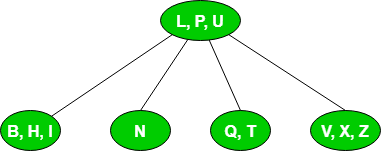
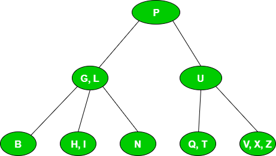
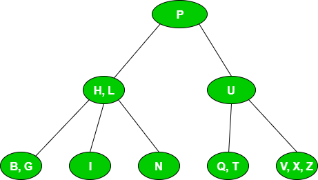
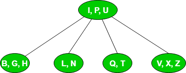
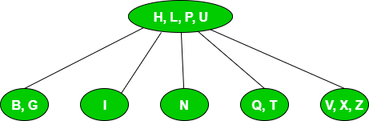
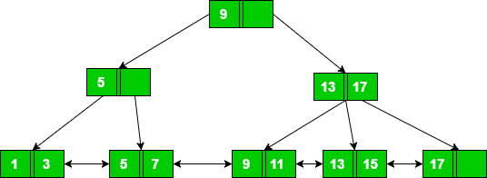
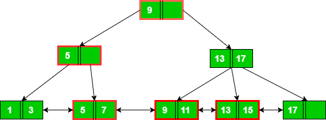
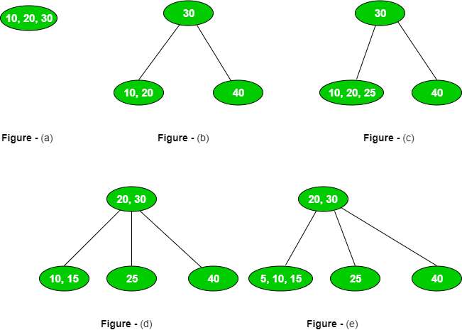
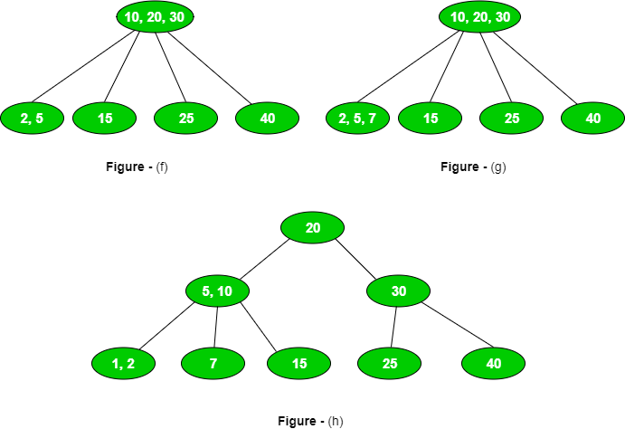

In this article, we will discuss different types of problems based on B and B+ trees. Before understanding this article, you should understand basics of B and B+ trees (see: Introduction, Insert, Delete).
These are the types of questions asked in GATE based on B and B+ trees.
Type 1. Based on order and number of keys in B and B+ tree –
These are the few key points related to order and number of keys:
- A B/B+ tree with order p has maximum p pointers and hence maximum p children.
- A B/B+ tree with order p has minimum ceil(p/2) pointers and hence minimum ceil(p/2) children.
- A B/B+ tree with order p has maximum (p – 1) and minimum ceil(p/2) – 1 keys.
Que – 1. Consider a B+-tree in which the maximum number of keys in a node is 5. What is the minimum number of keys in any non-root node? (GATE CS 2010)
(A) 1
(B) 2
(C) 3
(D) 4
Solution: Assuming order of B+ tree as p, maximum number of keys will be (p – 1). As it is given that,
p – 1 = 5 => p = 6
Therefore, minimum number of keys:
ceil(p/2) – 1 = 2
Type 2. Based on inserting a key in B/B+ tree –
Given the order of B/B+ tree and keys to be inserted, it can be asked to find resultant B/B+ tree or height of B/B+ tree.
Que – 2. Consider the following 2-3-4 tree (i.e., B-tree with a minimum degree of two) in which each data item is a letter. The usual alphabetical ordering of letters is used in constructing the tree.

What is the result of inserting G in the above tree?
(A)

(B)

(C)

(D) None
Solution: Since the given B tree has minimum degree as 2, the maximum degree or order will be 2*2 = 4. Therefore, it will have at most 4 pointers or 3 keys.
We will traverse from root till leaf node where G is to be inserted. As G is less than L, it will be inserted in leaf node with elements BHI. After insertion of G, the leaf node in sorted order will be BGHI which leads to overflow. It will be split into two parts BG and I and middle element H will be sent to its parent node as:

Now root node with keys H, L, P, U is overflowed which leads to splitting of root node into two parts HL and U and middle element P will be root node which matches option B.
Note:
- There occur 2 splits for insertion of G.
- The height of B tree is 1 (path from root node to leaf node) before insertion of G. After insertion of G, the height of B tree reaches 2.
Type 3. Based on searching a key in B/B+ tree –
These are the key points related to searching in B/B+ trees:
- For searching a key in B tree, we start from root node and traverse until the key is found or leaf node is reached.
- For searching a key in B+ tree, we start from root node and traverse until leaf node is reached as every key is present in leaf nodes. Also, leaf nodes are connected to each other which help in faster access of data for range queries.
Que – 3. With reference to the B+ tree index of order 1 shown below, the minimum number of nodes (including the root node) that must be fetched in order to satisfy the following query: “Get all records with a search key greater than or equal to 7 and less than 15” is ____. (GATE-CS-2015)

(A) 4
(B) 5
(C) 6
(D) 7
Solution: First we will search for key equal to 7. For finding 7, we will start from root node and move to node with key 5 and then move to leaf node with keys 5 and 7. So for searching 7, we need to access 3 nodes.
Once 7 is searched, we can go to next leaf node containing keys 9 and 11. From this, we can go to leaf node with keys 13 and 15. As we want keys less than 15, we can stop here. Therefore total nodes accessed = 3(for searching 7) + 2(for finding keys less than 12) = 5.

Note: If we use B tree, then we need to search 7, 8, 9, 10, 11 individually due of which node access will be higher. Therefore, B+ tee is preferred for range queries.
Type 4. Count of node splitting in B/B+ tree –
Que – 4. A B-tree of order 4 is built from scratch by 10 successive insertions. What is the maximum number of node splitting operations that may take place? (GATE CS 2008)
(A) 3
(B) 4
(C) 5
(D) 6
Solution: A B tree having order 4 can have maximum 3 keys.


First 3 insertions will not have any split as shown in Figure (a).
On inserting 4th element, there will be 1 split as shown in Figure (b).
On inserting 5th element, there will be no split but we will insert in that leaf node having maximum element to produce more splits in further insertions as shown in Figure (c).
On inserting 6th element, there will be 1 split as shown in Figure (d).
On inserting 7th element, there will be no split but we will insert in that leaf node having maximum element to produce more splits in further insertions as shown in Figure (e).
On inserting 8th element, there will be 1 split as shown in Figure (f).
On inserting 9th element, there will be no split but we will insert in that leaf node having maximum element to produce more splits in further insertions as shown in Figure (g).
On inserting 10th element, there will be 2 split as shown in Figure (h).
Total number of splits = 5.